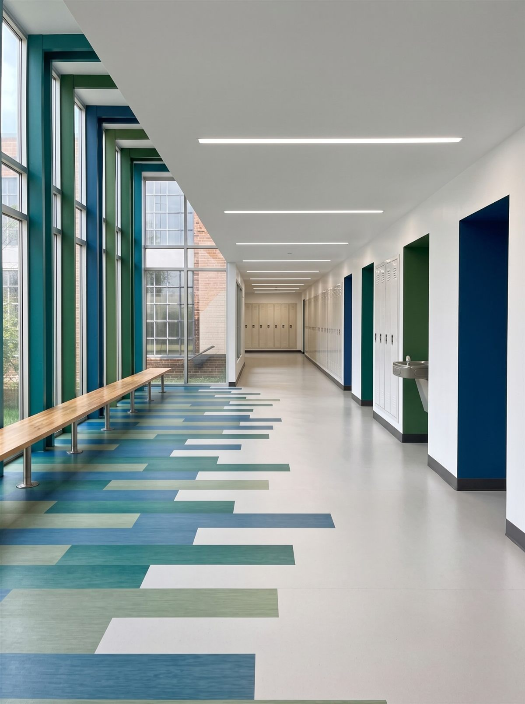
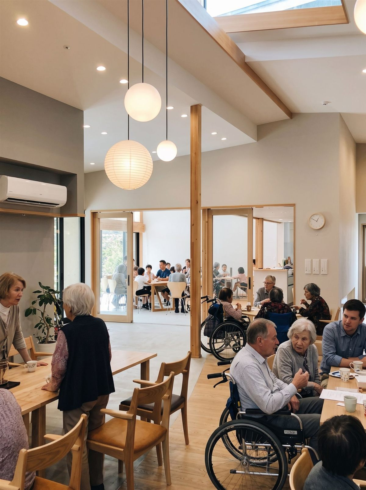
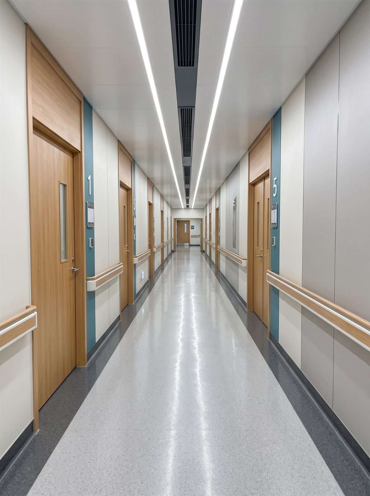
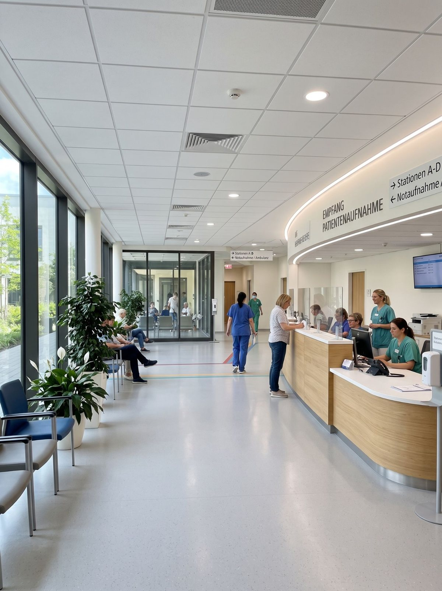
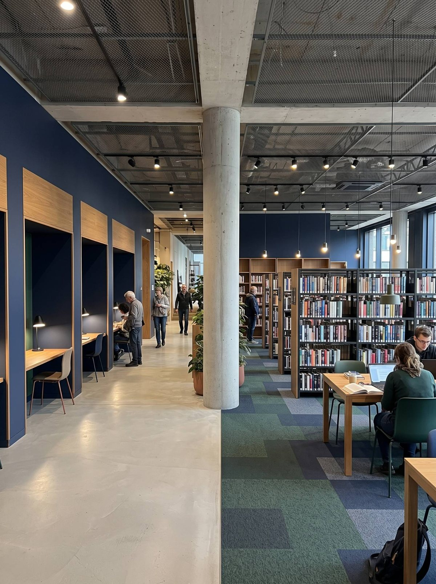

Bildungseinrichtungen
Referenzen ausschließlich für öffentliche Auftraggeber: Bildung, Gesundheit, Verwaltung und Kultur in Stuttgart und Baden-Württemberg.
Filtern Sie nach Objekttyp, Ort, Größenordnung und Fertigstellungsjahr. Mit „Musterdaten“ gekennzeichnete Projekte sind Platzhalter.





Keine Projekte für diese Auswahl.
Bitte ändern Sie die Filter oder fordern Sie das vollständige Projektarchiv an.
Projektarchiv, Zertifikate und Referenzschreiben – ohne Registrierung.